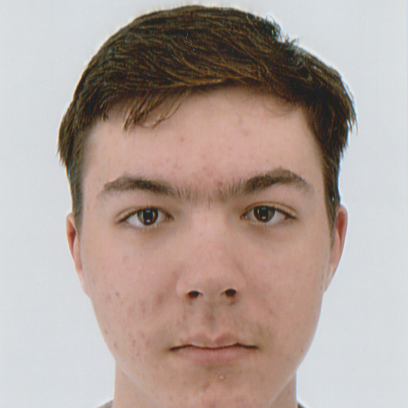

Je suis un étudiant en BUT informatique de 2e année à l’IUT de Clermont-Ferrand. J'apprends le développement d’algorithmes grâce aux langages C, C++, et Python, ainsi que le développement d’applications mobile/desktop avec C# .NET, Java, Kotlin. J’apprends également la création, la gestion et l’utilisation d’une base de données à l’aide de SQL et .NET Entity Framework, ainsi que l’administration d’un système Linux et d’un réseau. Je suis quelqu’un de persévérant, doté d’une capacité d'écoute, et autodidacte. Je recherche actuellement d’un stage dans le domaine du développement d’applications à compter du 15 avril, pour une durée de 10 semaines.